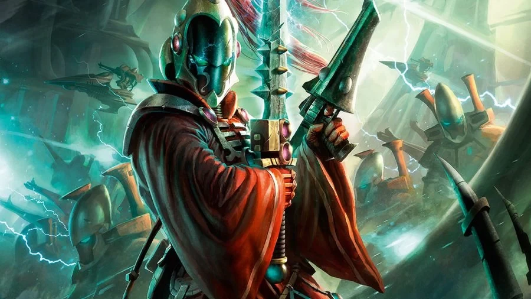
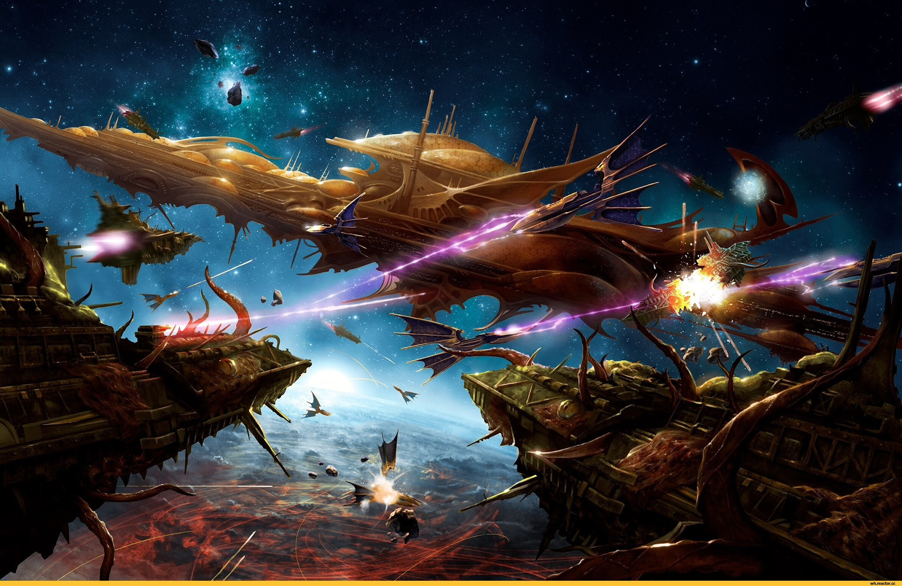
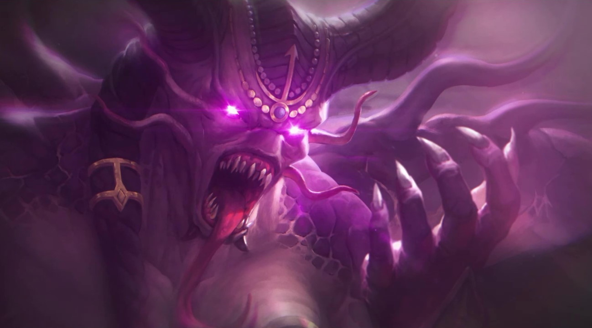
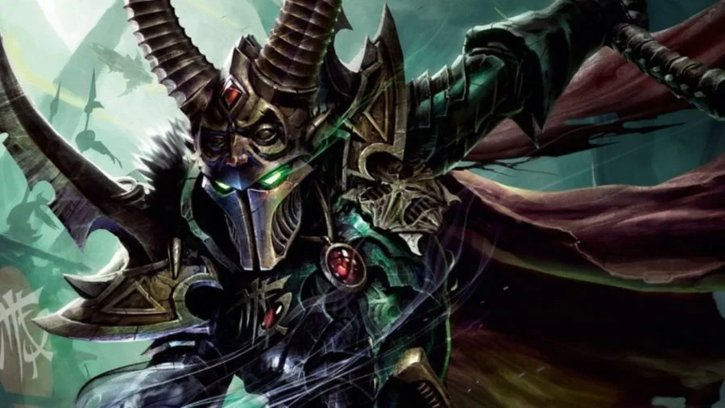
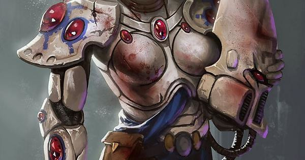

The Eldar are an ancient race of pround people that have suffered a great rift in their species in the form of The Drukhari or Dark Elves. The Eldar are now found exculsively in craftworlds which are gigangtic spaceships that contain all the things you need for a civlisation.
The Eldar were once the de-facto rulers of the Milky Way Galaxy with no competition and this lack of purpose ultimately lead to their downfall. The Eldar are based upon and share similar aspects to the elves found in our fantasy settings but here we have a space-faring type of elf.
Biology

Eldari Ready for Battle
The Eldar were created by the Old Ones as a tool in The War in Heaven and were gifted with great intelligence and psychic ability. Their emotions and base needs and desires are much stronger than that of their human counterparts and this proved to be a mistake by the Old Ones.
With the Necrons gone to rest in their Tomb Worlds 60 million years ago the Eldari were left to their own desires as there was no more war anymore. It was this flawed emotional make-up and desire of service to self that lead to Eldari culture becoming more and more corrupted and disturbing.
This disturbing behaviour was a result of the extremes the Eldari needed to go to feel satisfied and this lead to the dark cults. These cults were filled with Eldari who loved to watch the suffering of others and these cults would go around kidnapping hapless victims who were then tortured.
This darker and darker path the Eldari went down causes disturbances within the Warp and lead to the rift in Eldari society where the dark and depraved became the Drukhari (Dark Elves) and the good Eldar left their corrupted planets to live on Craftworlds where a life of temperance and service to others was followed.
Craftworlds

An Eldari Craftworld
A craftworld is a immense planet-sized spacecraft populated by the Eldar and these craftworlds travel through space at sublight speeds. Each craftworld is a self-sufficient independant realm with its own distinctive culture and everything you could possible need can be found within these craftworlds.
Every craftworld if built upon the skeleton of a psychoative, crystalline wraithbone whose structure extends throughout the gigangtic spacecraft. A wraithbone is the primary construction material of the Eldar and is a meta material that consists of psychic energy in physical form.
A wireless psychic grid is spread throughout the craft and essential to its design. The Eldar refer to this grid as the Infinity Circuit and it is a metaphyusical nerual structure studded with the Spirit Stones of the craftworlds dead.
The Birth of Slaanesh

Chaos God Slaanesh
The Eldari in their depravity and debauchery actually are resposible for the creation of a chaos god whose power is beyond reckoning. Hedonism was the main objective for most Eldari and in their wicked pelasure seeking the warp was continually disturbed until Slaanesh was birthed out of the warp killing trillions of Eldari instantly.
Slaanesh is the lord of pleasure, the Dark God dedicated to the pursuit pf earthly gratification and the overthrow of all decent behaviour as well as hedonism and pleasure for its own sake. Lust, pride and self-indulgence are the hallmarks of all who follow it. Slaanesh is tightly interwined with the fates of all Eldari and prevenative measure now needs to be taken by every elf otherwise they are consumed by Slaanesh and subject to eternal pain and torture.
The capabilities of their highly advanced technology meant that the Eldari did not need to labour or wage war. Instead, they were able to dedicate their lives to whatever idle pursuits took their fancy. This was their downfall
The Drukhari (Dark Eldar)

An Drukhari Warrior
The Drukhari, also known as the Dark Eldar are Eldar who remained on their dark planet after the birth of Slaanesh and are the craftworld Eldars sadistic counterparts. These individuals are evil and need to inflict pain on others in order to feel satisfied.
The Drukhari value piracy, enslavement and torture, and are sadistic to the extreme. The Drukhari are unique in that they are relatively few in number and limited to one world, a planet called Commorragh.
An interesting biologic trait of the Drukhari is the need to consume the souls of other beings - much like a vampire needs blood. This need is called The Thirst. It is thought that this need exists because Slaanesh leaches the soul-essence of the Drukari while they still live.
All Drukhari are ultimately doomed to a fate where Slaanesh will consume their soul when they die and so Drukhari need to consume the souls of others to prevent this from happening sooner than they want it to.
Spirit Stones

Spirit Stones on Armor
A Spirit Stone, also known as a Waystone, Dreamstone, or Tear of Isha is a small seemingly precious gem that can be adorned to various place on an Eldar body or vessel. It is used by craftworld Eldar to save their souls from consumption after death within the Warp by Slaanesh.
All Eldari are doomed to this fate because of their hedonistic tendancies of their ancestors and so preventative measures need to be taken else their fate ends with consumption by the Chaos God Slaanesh.
These Spirit Stones are attuned to soley to their owners and therefore cannot be stolen or traded. At the moment of the Eldar's death, the Spirit Stone acts like a "pyschic trap" absorbing their psychic self (or soul) and preventing it from entering the Warp and being consumed by Slaanesh.
After the soul is saved in the Spirit Stone the stone can be brought back to the owners craftworld and embedded into its wraithbone core where the owner can interact with other Eldari souls in a sort of after-life like state.